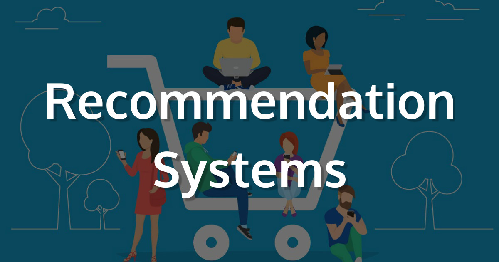
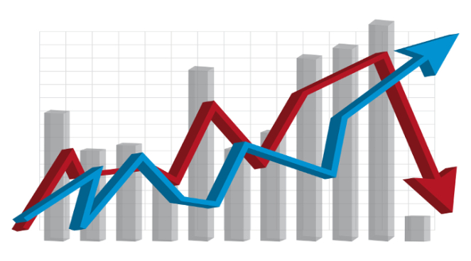

PROJECTS

ITEM RECOMMENDER
Read more »

DEMAND FORECASTING
Read more »
STUDENT PERSISTENCE ANALYSIS
Read more »

MULTI MODEL FUSION
Read more »
CUSTOMER CONVERSION PREDICTION SYSTEM
Read more »
AMAZON REVIEW ANALYSIS
Read more »

FANTASY PREMIER LEAGUE ANALYSIS
Read more »